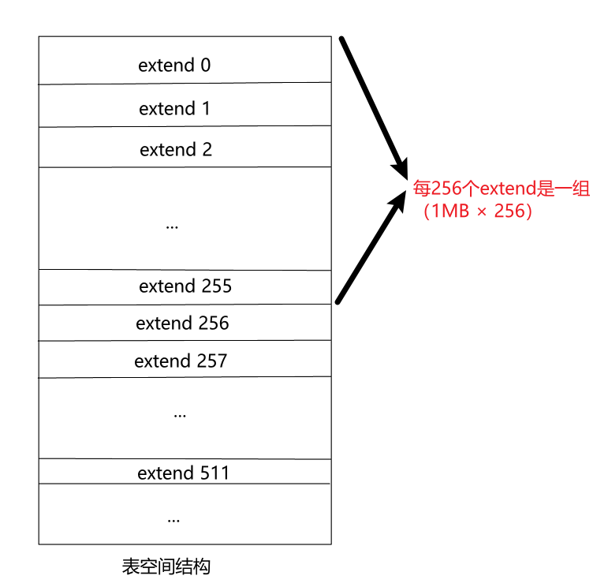
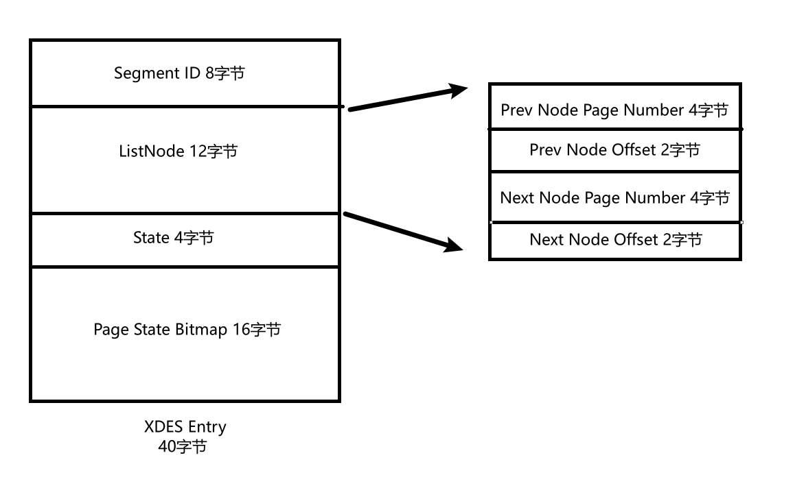
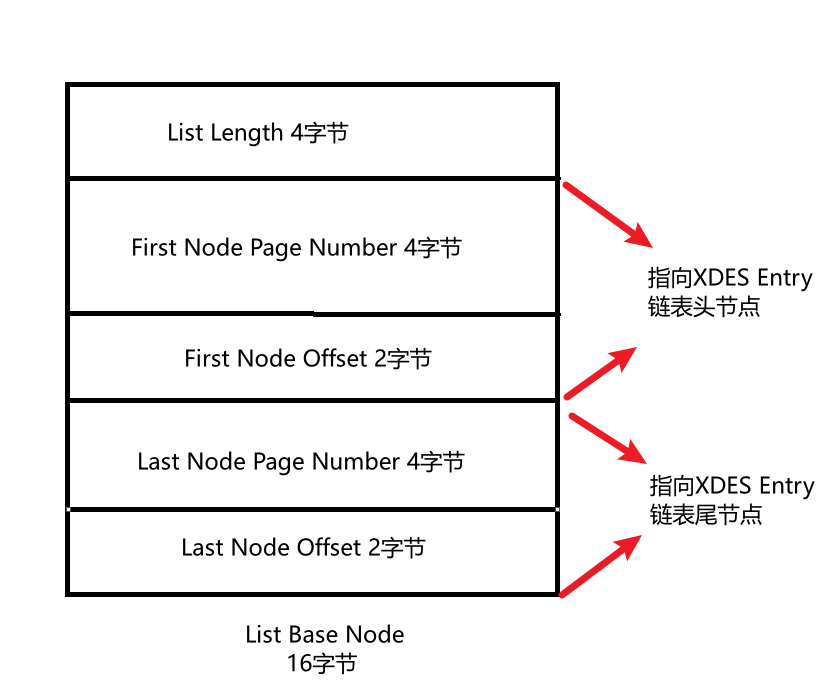
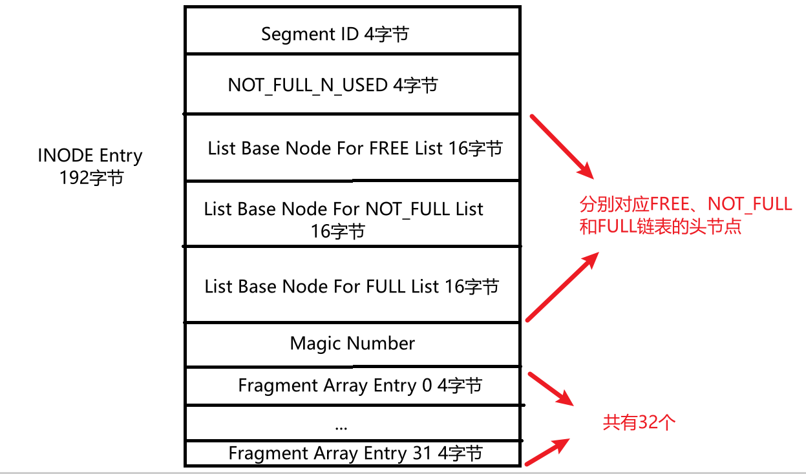
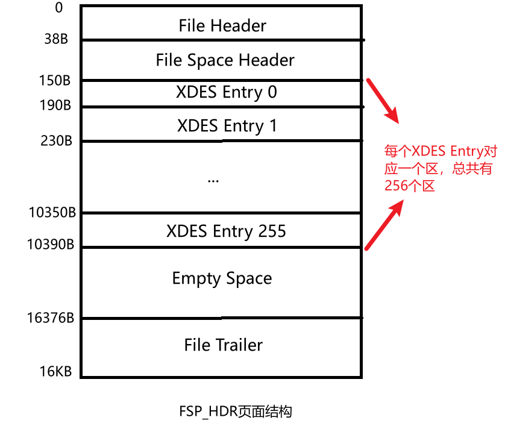
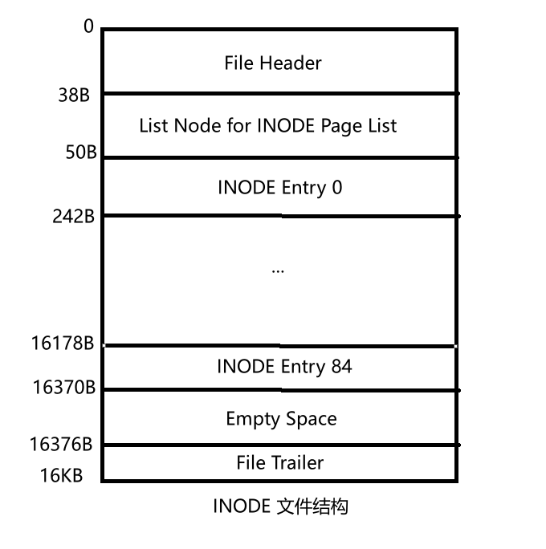

InnoDB的表空间
存储方式
- 《MySQL是怎样运行的（一）》中提到，每创建一个数据库schema，就会在MySQL数据目录下创建一个同名的文件夹schema，当在数据库（指MySQL5.6.6及以后的版本）中创建一个表格table时，默认采用独立表空间，即会在schema文件夹中创建一个同名的frm文件（table.frm）和ibd文件（table.ibd）。其中frm文件记录表格的基本信息，包括表名、列名、列长度、主键以及索引等，ibd文件则存储记录、索引、MVCC等相关信息。
- 独立表空间和系统表空间是InnoDB引擎独有的物理文件存储结构，其他引擎比如MyISAM不支持这个概念。
独立表空间
基本信息
- InnoDB是以页的形式存储数据，完整的数据记录是以聚簇索引的形式存放，也就是说，完整的数据记录的存储逻辑也是B+树，不是我们主观上认为的二维表格，即聚簇索引和完整的数据记录不是分开存储的，实际上二者是一体的，聚簇索引就是完整的表格数据。
- 每张表格对应的索引数目就是用户设置的索引数加1（聚簇索引）。
- 每次往表格中添加记录时，会先更新聚簇索引，再更新相关的二级索引
- B+树的节点就是数据页，数据页之间用指针相连。数据页（也就是INDEX类型的页，详情见《MySQL是怎样运行的（二）》）由七个部分组成，其中首尾部分分别是File Header和File Trailer，这两个部分是所有类型的页面通用的。
物理结构
- 一个idb文件对应一个表格，实际上就是一个独立表空间。每个独立表空间可以划分为多个组，每个组由256个区（extend）组成，每个区默认大小为1MB，即连续的64个页(每个页默认16KB)。
- 每个独立表空间中，第一个组最开始的三个页面类型是FSP_HDR\IBUF_BITMAP\INODE，其余组的最开始两个页面类型是XDES\IBUF_BITMAP。（注：每个独立表空间只有一个FSP_HDR类型的页面）
逻辑结构
- 为了减少随机IO，开发者将同一个索引B+树的页面尽可能在物理存储上也放在一起，因此同一个B+树的页面尽可能分配在同一个组，同时将叶子节点和非叶子节点分开存放。
- 开发者将每个索引在逻辑上分为两个段，分别是叶子节点段和非叶子节点段。
- 段和区的关系
- 段是逻辑上的概念，区是表空间中连续的64个页面
- 区有4种分类，分别是空闲区，有剩余页面的碎片区，没有剩余页面的碎片区、属于某个段的区
- 碎片区的页面可以分给不同的段
- 为某个段分配存储空间的策略如下
- 当表格数据不多时，从碎片区选择单个空页面来分配存储空间
- 当某个段已经占用了32个碎片区页面后，就会以完整的区来分配存储空间（原先占用的碎片区页面并不会被复制到新申请的完整区之中）
详细信息
区
- 空闲区
- 属于整个独立表空间
- 通过链表的形式连接起来，链表头存放在第一个区中的第1个页面中（即FSP_HDR）
- 链表的节点类型是XDES Entry，状态为FREE，Segment ID无效 其中的State就是前面提到的区的分类，可选的值分别是FREE(空闲区)、FREE_FRAG(有空闲页面的碎片区)、FULL_FRAG（没有空闲页面的碎片区）、FSEG（属于某个段的区）
- 链表头节点的类型是List Base Node
- 碎片区
- 属于整个独立表空间
- 通过链表的形式连接起来，链表头存放在第一个区中的第1个页面中（即FSP_HDR）
- 链表的节点类型是XDES Entry，状态为FREE_FRAG（有空闲页面的碎片区）或者FULL_FRAG（没有空闲页面的碎片区），Segment ID无效
- 链表头节点的类型是List Base Node
- 属于段的区
- 属于某个段
- 通过链表的形式连接起来，链表头存放在第一个区中的第1个页面中（即FSP_HDR）
- 链表的节点类型是XDES Entry，Segment ID为对应段的ID
- 链表头节点的类型是List Base Node
段
- 段是一个逻辑上的概念，其物理上包括多个零散的页面和多个区，其中零散的页面属于碎片区。
- 由于每个索引都有两个段，因此也需要设计相关的结构来存储相关信息。
- 段的属性存储在INODE Entry中，INODE Entry也由链表连接起来，属于链表的节点
Segment ID - 每个段独有的编号
NOT_FULL_N_USED - 在NOT_FULL链表中已经用了多少个页面
List Node Base - 分别记录空链表、未满链表和满链表的头结点
Magic Number - 标记该INODE Entry是否已经完整填入相关信息，是则初始化该字段为97937874
Fragment Array Entry - 该段对应的零散页面的页号
页面
- 前面提到，独立表空间分为多个组，每个组由256个区组成，每个区又由64个页面组成，即独立表空间可以分成多个组，每个组有256 × 64 = 16384个页面。
- 每个组的前几个页面是固定的。第一个组的前三个页面的页面类型分别是FSP_HDR、IBUF_BITMAP、INODE，其余组的前两个页面的页面类型分别是XDES、IBUF_BITMAP。
- FSP_HDR
* File Space Header存储整个独立表空间的属性
每个段对应的INODE Entry结构会集中存放到INODE页面中（即整个表空间的第三个页面），但如果索引很多，就会导致段很多，一个INODE页面无法完整存放所有数据，此时就会有多个INODE类型的页面来组成链表。SEG_INODES_FREE链表中的页面还有空间，SEG_INODES_FULL中的页面没有多余空间字段名称 占用空间(/字节) 作用 Space ID 4 表空间的ID Not Used 4 未使用，可忽略 Size 4 当前表空间拥有的页面数 Free Limit 4 未被初始化的最小页号，即大于或等于这个页号的页面的区对应的XDES Entry 结构没有被加入Free链表 Space Flags 4 表空间的一些占用存储空间比较小的属性 FRAG_N_USED 4 FREE_FRAG链表中已使用的页面数量 List Base Node for FREE list 16 FREE链表的头结点 List Base Node for FREE_FRAG list 16 FREE_FRAG链表的头结点 List Base Node for FULL_FRAG list 16 FULL_FRAG链表的头结点 Next Unused Segment ID 8 当前表空间中下一个未使用的Segment ID List Base Node for SEG_INODES_FULL list 16 SEG_INODES_FULL链表的头结点 List Base Node for SEG_INODES_FREE list 16 SEG_INODES_FREE链表的头结点 - IBUF_BITMAP
- 记录了有关Change Buffer的相关信息
- INODE
- 该类型的页面主要用于存储段的相关信息
- 当索引足够多时，就会导致段的数目过多，因此一个INODE页面无法存下所有的INODE Entry，需要多个INODE类型的页面来存储。此时就0号页面FSP_HDR中的SEG_INODES_FULL list和SEG_INODES_Free list相呼应
- 存储INODE Entry的过程大致如下:每当新创建一个段
- 先从SEG_INODES_Free中查看是否为空，如果不空，则从中获取一个节点，相当于获取一个未写满的INODE页面，填充入新的段对应的INODE Entry。当这个页面填满后，就将其放入SEG_INODES_Full链表中
- 如果SEG_INODES_Free链表为空，就需要从表空间的FREE_FRAG链表中申请一个新的页面，并将该页面类型修改为INODE，填入新的段对应的INODE Entry后，如果没有满，则将其放入SEG_INODES_Free中，否则放入SEG_INODES_Full中。
- XDES
- 与FSP_HDR页面几乎一样，只是FSP_HDR的File Space Header部分变为不进行使用
系统表空间
- 整个MySQL进程只有一个系统表空间，需要记录整个系统的相关信息。
- 系统表空间也分为若干个qu，每个区的前几个页面也是有固定的格式。
- 关于系统表空间的内容本文不再详细描述。